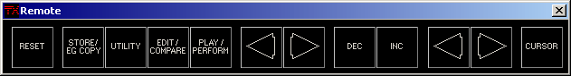

A really nice feature of the TX81Z is the ability to send button pushes to it via MIDI. Although the program makes it pretty much redundant, I thought I would put it in anyway. It works about like you would expect: you push a button and it sends a remote button push command. The program can't keep track of what mode the unit is in, though. That's why I didn't put the little LEDs on the buttons.
There's a Stay On Top option in the system menu (click the TX icon in the upper left corner). This will make the remote control window stay above every other window in the system.